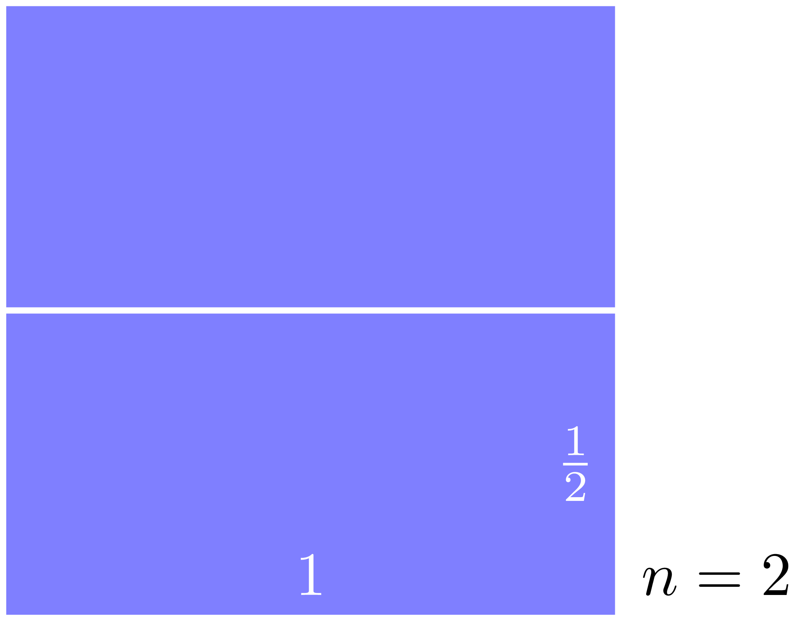

August, 2021
在學習數學的路程中，大家或多或少都會覺得數學只是學一些運用數字、符號的技巧，但數學的精神實在於找尋規律與邏輯的思考，牛津大學的數學面試就充分地體現這樣的想法： Tom Crawford 教授設計的其中一個面試問題中就沒有任何計算，並且問題敘述簡單到連小學、國中生都可以懂。
這樣的問題不是要看出一個學生會多少複雜的數學，而是要測驗他們探索現象的方式以及歸納與推演的能力。我們就來看看你可不可以通過牛津大學的數學面試吧！
問題：可以用 \(n\) 個長寬比 \(2:1\) 的長方形鋪滿一個正方形嗎？
為了方便，我們令正方形的邊長為 \(1\)。顯然地 \(n\) 不能等於 \(1\)，因為正方形的長寬比是 \(1:1\)；但是 \(n=2\) 就是可行的，方式如下：

嚴謹一點說：
問題：給定任意的正整數 \(n\)，是否可以用 \(n\) 個長寬比為 \(2:1\) 的長方形來鑲嵌一個正方形？
注意到問題中不要求使用的長方形大小要相同，只要長寬比是 \(2:1\) 就 ok。
動手試試看吧！ 暴雷解答在此